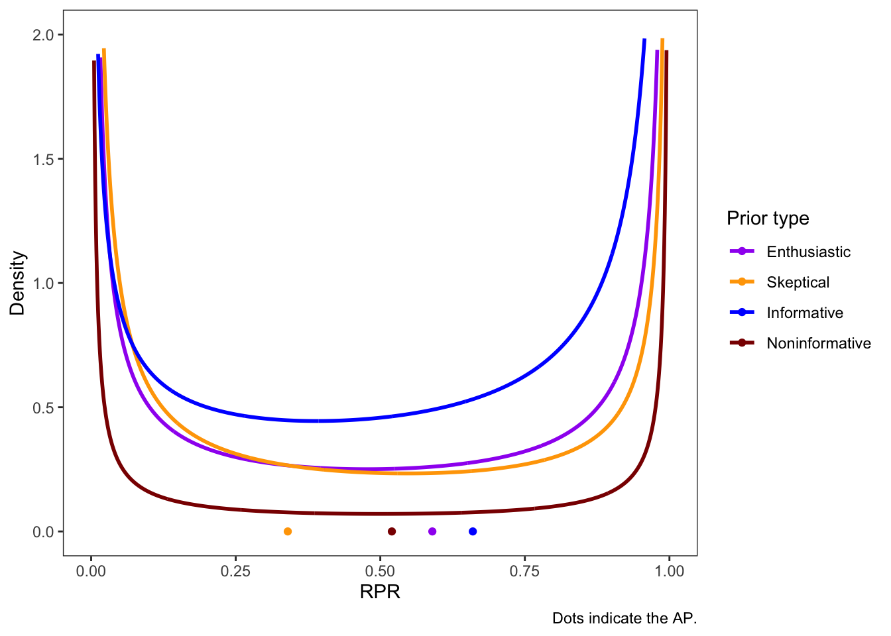
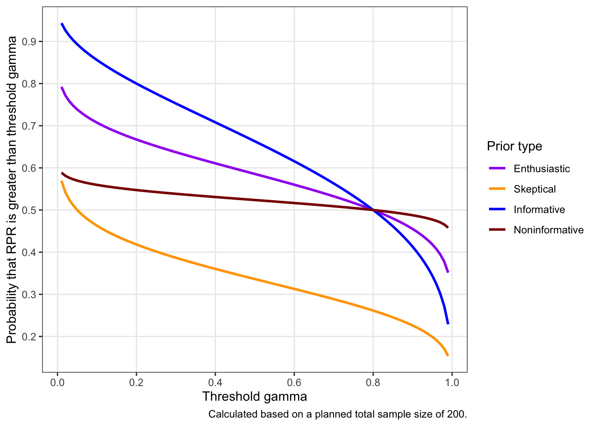

Chapter 2 Two-arm non-inferiority setting
In this section we consider a non-inferiority clinical trial setting with a null hypothesis \(H_0: \delta > \delta^*\) and alternative hypothesis \(H_a: \delta \leq \delta^*\), where \(\delta^*>0\) is a fixed non-inferiority margin and a treatment effect \(\delta\).

2.1 Binomial outcome
Here \(p_i\), \(i\in \{0,1\}\), are event probabilities from two treatment arms. \(\delta=p_1-p_0\) is the true treatment effect expressed as a risk difference.
Working example
We use the SAFE-SSPE trial as a working example [3]. In brief, this non-inferiority randomised placebo-controlled trial compares clinical surveillance versus anticoagulant treatment in low-risk patients with isolated subsegmental pulmonary embolism (SSPE). The primary outcome is 3-month recurrence of venous thromboembolism (VTE). The null hypothesis \(H_0\) is ‘clinical surveillance is inferior to anticoagulant treatment’ versus the alternative hypothesis \(H_a\) ‘clinical surveillance is non-inferior to anticoagulant treatment’. The non-inferiority margin was set at 3.5% and it was assumed that the proportion of VTE in both groups was 1%.
2.1.1 Frequentist approach
Let \(Y_{i,k} \sim^{iid} Bernoulli(p_i)\), \(k=1,\dots,n_i\), \(i\in \{0,1\}\). Let \(\overline p_i=\frac{1}{n_i}\sum_{k\leq n_i} Y_{i,k}\), \(i\in {0,1}\), and thus the estimated risk difference \(D=\overline p_1-\overline p_0\) is Gaussian distributed with \(D \sim N\left(\delta, \frac{\sigma_1^2}{n_1}+\frac{\sigma_0^2}{n_0}\right)\), where \(\sigma_i^2=p_i(1-p_i)\), \(i\in \{0,1\}\). For notational purposes we denote \(\sigma_{treat}^2=\frac{\sigma_1^2}{n_1}+\frac{\sigma_0^2}{n_0}\), that is, the variance for the estimated treatment effect.
We are interested whether the upper \((1-\alpha)\%\)-confidence limit is smaller than the non-inferiority margin, that is, \[ D+z_{1-\alpha}\sqrt{\frac{n_0\sigma_1^2+n_1\sigma_0^2}{n_1n_0}}\leq \delta^*, \] where \(z_{1-\alpha}=\Phi^{-1}(1-\alpha)\). Simple algebra leads to \[ D\leq -z_{1-\alpha}\sqrt{\frac{n_0\sigma_1^2+n_1\sigma_0^2}{n_1n_0}}+\delta^*. \] Note that \(D_{suc}^{\delta^*}:=-z_{1-\alpha}\sqrt{\frac{n_0\sigma_1^2+n_1\sigma_0^2}{n_1n_0}}+\delta^*\) is the required risk difference for a ‘successful’ rejection of the null hypothesis. Then \[ \begin{aligned} P_\delta(D\leq D_{suc}^{\delta^*})&=\Phi\left(-z_{1-\alpha}-\sqrt{\frac{n_1n_0}{n_0\sigma_1^2+n_1\sigma_0^2}}(\delta-\delta^*)\right) \\ &=\Phi\left(-z_{1-\alpha}-\frac{(\delta-\delta^*)}{\sigma_{treat}}\right), \end{aligned} \] since under regularity conditions, \[ Z=\frac{D-\delta^*}{\sigma_{treat}} \rightarrow N(0,1), \quad \min(n_1,n_0) \rightarrow \infty. \] \(P_{\delta}(D\leq D_{suc}^{\delta^*})\) is the ‘probability of rejection given \(\delta\)’. Under the null value \(\delta_0=p_1-p_0\), \(P_{\delta_0}(D\leq D_{suc}^{\delta^*})=\alpha\) is the ‘type-I error’ and under an alternative value \(\delta_A\), \(P_{\delta_A}(D\leq D_{suc}^{\delta^*})=1-\beta\) is the ‘frequentist power’.
For an alternative value \(\delta_A\) it holds that
\[ -z_{1-\alpha}-\sqrt{\frac{n_1n_0}{n_0\sigma_1^2+n_1\sigma_0^2}}(\delta_A-\delta^*)=\Phi^{-1}(1-\beta)=z_{1-\beta} \] and so the sample size can then be derived as \[ \frac{(z_{1-\beta}+z_{1-\alpha})^2}{(\delta_A-\delta^*)^2}=\frac{an_0^2}{n_0\sigma_1^2+an_0\sigma_0^2}, \] where \(a=n_1/n_0\) is an allocation ratio, such that \[ n_0=(z_{1-\beta}+z_{1-\alpha})^2\frac{\sigma_1^2+a\sigma_0^2}{a(\delta_A-\delta^*)^2}, \quad n_1=an_0. \]
\(\delta_0\), \(\delta_A\) and \(\delta^*\) are assumed as fixed and known constants in a frequentist approach. Their choices are of high importance, because all trial conclusions are based on those choices and affect the sample size calculation. The plot below shows how the sample size increase as \(\delta^*\) approaches \(\delta\).

Working example (continued)
We calculate the required sample size for the SAFE-SSPE trial under the following parameters:
- \(p_1=0.01\), \(p_0=0.01\), \(\delta^*=0.035\), \(1-\beta=0.8\), \(\alpha=0.05\), \(a=1/1\)
Code
library(epiR)
alpha <- 0.05
beta <- 0.2
p_0 <- 0.01
p_1 <- 0.01
delta <- p_1-p_0
delta_star <- 0.035
sd_0 <- sqrt(p_0*(1-p_0))
sd_1 <- sqrt(p_1*(1-p_1))
a <- 1/1
epi.ssninfb(treat=p_1, control=p_0, delta=delta_star, power=1-beta, r=a, alpha=alpha, n=NA)## $n.total
## [1] 200
##
## $n.treat
## [1] 100
##
## $n.control
## [1] 100
##
## $delta
## [1] 0.035
##
## $power
## [1] 0.8Code
n_0 <- ((qnorm(1-beta)+qnorm(1-alpha))^2)*((sd_1^2+a*sd_0^2)/(a*(delta-delta_star)^2))
n_0## [1] 99.93031Code
n_1 <- n_0*a
n_1## [1] 99.93031Given the specified operating characteristics and parameters a sample size of 200 patients (100 per arm) is needed to reject the null hypothesis of inferiority. This is more or less the sample size mentioned in the study protocol of the SAFE-SSPE trial but without dropouts and adjustments for rare events.
2.1.2 Hybrid approach: Prior on treatment effect
Suppose that the true treatment effect \(\delta\) is a realization from a random variable \(\Delta\) with \(p(\delta)\). In this subsection we assume that the prior comes from a Gaussian distribution function so that \(\Delta \sim N\left(d, \frac{\sigma_1^2+\sigma_0^2}{m}\right)\). Note that this prior can be thought as a realisation from \(m\) Gaussian ‘prior observations’ with variance \(\sigma_1^2+\sigma_0^2\). Again for notational purposes we denote \(\sigma_{prior}^2=\frac{\sigma_1^2+\sigma_0^2}{m}\) as the variance of the design prior on the treatment effect.
In the following we will use the following priors:
- Enthusiastic prior (favors non-inferiority): \(d=0\), \(m=6.6\), \(P(\Delta>\delta^*)=0.05\). This prior is centered on the treatment effect such that there is a low probability (here 5%) of inferiority.
- Skeptical prior (favors inferiority): \(d=\delta^*\), \(m=6.6\), \(P(\Delta>0)=0.05\). This prior is centered on the non-inferiority margin such that there is a low probability (here 5%) of superiority.
- Informative prior (clinical expert knowledge): \(d=0\) with \(m=25\).
- Noninformative prior: \(d=0\) with \(m=0.5\).

Let \[ AP:=\int_{\Delta} P_{\delta}(D\leq D_{suc}^{\delta^*})p(\delta)d\delta, \]
be the ‘average power’ [4] (also called ‘assurance’ [5], ‘probability of success’ [1], [2] or Bayesian predictive power [6]. The supplemental section of [1] contains a literature review of the used terminology). Remember that in an hybrid approach we are interested in trial conclusions from a frequentist point of view, thus we are interested in
\[ D\leq -z_{1-\alpha}\sqrt{\frac{n_0\sigma_1^2+n_1\sigma_0^2}{n_1n_0}}+\delta^*. \] By using a design prior we take into account the uncertainty of the treatment effect. The prior predictive distribution for an estimated risk difference, say \(\tilde D\), with a prior \(\Delta \sim N\left(d, \sigma_{prior}^2\right)\) includes this uncertainty. For the Gaussian case, the prior predictive distribution of \(\tilde D\) is given as \[ \tilde D \sim N\left(d, \sigma_{treat}^2+\sigma_{prior}^2\right), \] since \(\tilde D \sim N\left(\delta, \sigma_{treat}^2\right)\).
Suppose now that \(D\) has a predictive distribution as described above, then \[ \begin{aligned} AP&=\int_{-\infty}^{-z_{1-\alpha}\sqrt{\frac{n_0\sigma_1^2+n_1\sigma_0^2}{n_1n_0}}+\delta^*}f(\tilde\delta)d\tilde\delta= \Phi\left(\frac{1}{\sigma_{prior}}\left[-z_{1-\alpha}\sigma_{treat}-(d-\delta^*)\right]\right) \end{aligned} \] see for example [4]. Note that as \(m \rightarrow \infty\), then \(AP \rightarrow \Phi\left(-z_{1-\alpha}-\frac{(d-\delta^*)}{\sigma_{treat}}\right)\), that is, the frequentist power at \(d\).
Working example (continued)
We calculate the AP under the assumed prior distributions and parameters for the SAFE-SSPE trial.
Code
# Enthusiastic prior
m <- 6.6
prior_mean <- 0
sigma_prior <- sqrt((sd_0^2+sd_1^2))/sqrt(m)
sigma_treat <- sqrt((sd_0^2/n_0+sd_1^2/n_1))
AP <- pnorm(1/sigma_prior*(-qnorm(1-alpha)*sigma_treat-(prior_mean-delta_star)))
data_output <- data.frame(type="Enthusiastic", n_0, n_1, AP=round(AP,2))
# Skeptical prior
m <- 6.6
prior_mean <- delta_star
sigma_prior <- sqrt((sd_0^2+sd_1^2))/sqrt(m)
sigma_treat <- sqrt((sd_0^2/n_0+sd_1^2/n_1))
AP <- pnorm(1/sigma_prior*(-qnorm(1-alpha)*sigma_treat-(prior_mean-delta_star)))
data_output <- rbind(data_output, data.frame(type="Skeptical", n_0, n_1, AP=round(AP,2)))
# Informative prior
m <- 25
prior_mean <- 0
sigma_prior <- sqrt((sd_0^2+sd_1^2))/sqrt(m)
sigma_treat <- sqrt((sd_0^2/n_0+sd_1^2/n_1))
AP <- pnorm(1/sigma_prior*(-qnorm(1-alpha)*sigma_treat-(prior_mean-delta_star)))
data_output <- rbind(data_output, data.frame(type="Informative", n_0, n_1, AP=round(AP,2)))
# Noninformative prior
m <- 0.5
prior_mean <- 0
sigma_prior <- sqrt((sd_0^2+sd_1^2))/sqrt(m)
sigma_treat <- sqrt((sd_0^2/n_0+sd_1^2/n_1))
AP <- pnorm(1/sigma_prior*(-qnorm(1-alpha)*sigma_treat-(prior_mean-delta_star)))
data_output <- rbind(data_output, data.frame(type="Noninformative", n_0, n_1, AP=round(AP,2)))
data.frame(data_output %>% arrange(type))## type n_0 n_1 AP
## 1 Enthusiastic 99.93031 99.93031 0.59
## 2 Informative 99.93031 99.93031 0.66
## 3 Noninformative 99.93031 99.93031 0.52
## 4 Skeptical 99.93031 99.93031 0.34Under an ‘enthusiastic prior’ we get an average power of 59%. For an ‘skeptical prior’ the average power decreases to 34%. These values are lower than the frequentist power of 80%.
Rufibach et al. give a closed a formula for the distribution of \(RPR:=P_\Delta(D\leq D_{suc}^{\delta^*})\), where \(\Delta \sim N(d,\sigma^2_{prior})\), and discuss the shape under different prior choices [6]. In the following we use the wording ’random probability to reject` (RPR) similar to [1].
For \(0<y<1\), the random variable \(RPR\) has a probability density function \[ \begin{aligned} f(y)&=\frac{\sigma_{treat}}{\sigma_{prior}} \phi\left(-z_{1-\alpha}\frac{\sigma_{treat}}{\sigma_{prior}}-\frac{(d-\delta^*)}{\sigma_{prior}}-\frac{\sigma_{treat}}{\sigma_{prior}}\Phi^{-1}(y) \right)\left[ \phi\left(\Phi^{-1}(y) \right) \right]^{-1}, \end{aligned} \] see [6].
Special case
For the case that \(n_0=n_1=n\) and \(\sigma_1^2=\sigma_0^2=\sigma^2\), then \(\sigma_{treat}^2=\frac{2\sigma^2}{n}\) and \(\sigma_{prior}^2=\frac{2\sigma^2}{m}\), and the formula above reduces to
\[ \begin{aligned} f(y)&=\sqrt{\frac{m}{n}}\phi\left(\sqrt{\frac{m}{n}}\left[-z_{1-\alpha}-\sqrt{\frac{n}{2\sigma^2}}(d-\delta^*)-\Phi^{-1}(y)\right] \right)\left[ \phi\left(\Phi^{-1}(y) \right) \right]^{-1}, \quad 0<y<1. \end{aligned} \]
Working example (continued)
We derive the probability densities for the different assumed priors for the SAFE-SSPE study.
Code
x <- seq(0.001,0.999,0.001)
# Enthusiastic prior
m <- 6.6
prior_mean <- 0
sigma_prior <- sqrt((sd_0^2+sd_1^2))/sqrt(m)
sigma_treat <- sqrt((sd_0^2/n_0+sd_1^2/n_1))
## Rufibach 2016: formula (4)
y <- sqrt(m*n_0*sd_1^2+m*n_1*sd_0^2)/(sqrt(n_1*n_0*(sd_0^2+sd_1^2)))*dnorm(-sqrt(m*n_0*sd_1^2+m*n_1*sd_0^2)/(sqrt(n_1*n_0*(sd_0^2+sd_1^2)))*qnorm(1-alpha)-sqrt(m)/sqrt((sd_0^2+sd_1^2))*(prior_mean-delta_star)-sqrt(m*n_0*sd_1^2+m*n_1*sd_0^2)/(sqrt(n_1*n_0*(sd_0^2+sd_1^2)))*qnorm(x))*(dnorm(qnorm(x)))^(-1)
data_power <- data.frame(x, y, type="Enthusiastic")
# Skeptical prior
m <- 6.6
prior_mean <- delta_star
sigma_prior <- sqrt((sd_0^2+sd_1^2))/sqrt(m)
sigma_treat <- sqrt((sd_0^2/n_0+sd_1^2/n_1))
y <- sigma_treat/sigma_prior*dnorm(-qnorm(1-alpha)*sigma_treat/sigma_prior-(1/sigma_prior)*(prior_mean-delta_star)-(sigma_treat/sigma_prior)*qnorm(x))*(dnorm(qnorm(x)))^(-1)
data_power <- rbind(data_power, data.frame(x, y, type="Skeptical"))
# Informative prior
m <- 25
prior_mean <- 0
sigma_prior <- sqrt((sd_0^2+sd_1^2))/sqrt(m)
sigma_treat <- sqrt((sd_0^2/n_0+sd_1^2/n_1))
y <- sigma_treat/sigma_prior*dnorm(-qnorm(1-alpha)*sigma_treat/sigma_prior-(1/sigma_prior)*(prior_mean-delta_star)-(sigma_treat/sigma_prior)*qnorm(x))*(dnorm(qnorm(x)))^(-1)
data_power <- rbind(data_power, data.frame(x, y, type="Informative"))
# Noninformative prior
m <- 0.5
prior_mean <- 0
sigma_prior <- sqrt((sd_0^2+sd_1^2))/sqrt(m)
sigma_treat <- sqrt((sd_0^2/n_0+sd_1^2/n_1))
y <- sigma_treat/sigma_prior*dnorm(-qnorm(1-alpha)*sigma_treat/sigma_prior-(1/sigma_prior)*(prior_mean-delta_star)-(sigma_treat/sigma_prior)*qnorm(x))*(dnorm(qnorm(x)))^(-1)
data_power <- rbind(data_power, data.frame(x, y, type="Noninformative"))
data_output2 <- data_output %>% select(type, x=AP) %>% mutate(y=0)
data_power$type <- factor(data_power$type, levels=c("Enthusiastic", "Skeptical", "Informative", "Noninformative"))
ggplot(data_power, aes(x, y, colour=type))+geom_line(linewidth=1)+geom_point(data=data_output2, aes(x=x, y=y, colour=type))+scale_colour_manual("Prior type", values=c("purple", "orange", "blue", "darkred"))+theme_bw()+theme(panel.grid = element_blank())+ylab("Density")+xlab("RPR")+ylim(c(0,2))+labs(caption="Dots indicate the AP.")
The cumulative distribution function of \(RPR\) can the be calculated as
\[ \begin{aligned} P(RPR\leq y)=1-\Phi&\left(\frac{\sigma_{treat}}{\sigma_{prior}}\left[-z_{1-\alpha}-\frac{(d-\delta^*)}{\sigma_{treat}}-\Phi^{-1}(y) \right]\right), \quad 0<y<1. \end{aligned} \]
Special case
For the case that \(n_0=n_1=n\) and \(\sigma_1^2=\sigma_0^2=\sigma^2\), then \(\sigma_{treat}^2=\frac{2\sigma^2}{n}\) and \(\sigma_{prior}^2=\frac{2\sigma^2}{m}\), and the formula above reduces to
\[ \begin{aligned} P(RPR\leq y)=1-\Phi&\left(\frac{\sigma_{treat}}{\sigma_{prior}}\left[-z_{1-\alpha}-\frac{(d-\delta^*)}{\sigma_{treat}}-\Phi^{-1}(y) \right] \right), \quad 0<y<1. \end{aligned} \]
Note that if \(n_0\) and \(n_1\) are the planned treatment arm sample sizes from a frequentist power calculation as described in Section 2.1.1 above, then, if \(d=\delta_A\), \[ -z_{1-\alpha}-\frac{(d-\delta^*)}{\sigma_{treat}}=\Phi^{-1}(y)=\Phi^{-1}(1-\beta) \quad \Rightarrow \quad P(RPR\leq y)=0.5, \quad y=1-\beta. \]
Working example (continued)
With the above formula we calculate the probability \(P(RPR>\gamma)\), \(0<\gamma<1\), for the SAFE-SSPE study. We use an enthusiastic (\(m=6.6\)), an informative (\(m=25\)) and a noninformative prior (\(m=0.5\)) prior, all centered on \(\delta=0\).
Code
# gamma range
gamma <- seq(0.01,0.99,0.01)
# Centered on p1-p0
prior_mean <- 0
m_range <- c(0.5, 6.6, 25)
n_0_range <- n_0
data_rpr <- expand.grid(gamma, m_range, n_0_range)
names(data_rpr) <- c("gamma", "m_range", "n_0_range")
data_rpr$n_1_range <- a*data_rpr$n_0_range
data_rpr$sigma_treat <- sqrt(sd_0^2/data_rpr$n_0_range+sd_1^2/data_rpr$n_1_range)
data_rpr$sigma_prior <- sqrt(sd_0^2/data_rpr$m_range+sd_1^2/data_rpr$m_range)
data_rpr$p_rpr <- pnorm(-qnorm(1-alpha)*data_rpr$sigma_treat/data_rpr$sigma_prior-(1/data_rpr$sigma_prior)*(prior_mean-delta_star)-(data_rpr$sigma_treat/data_rpr$sigma_prior)*qnorm(data_rpr$gamma))
data_rpr$type <- NA
data_rpr$type[data_rpr$m_range==0.5] <- "Noninformative"
data_rpr$type[data_rpr$m_range==6.6] <- "Enthusiastic"
data_rpr$type[data_rpr$m_range==25] <- "Informative"
# Centered on noninferiority margin
prior_mean <- delta_star
m_range <- c(6.6)
n_0_range <- n_0
data_rpr_skep <- expand.grid(gamma, m_range, n_0_range)
names(data_rpr_skep) <- c("gamma", "m_range", "n_0_range")
data_rpr_skep$n_1_range <- a*data_rpr_skep$n_0_range
data_rpr_skep$sigma_treat <- sqrt(sd_0^2/data_rpr_skep$n_0_range+sd_1^2/data_rpr_skep$n_1_range)
data_rpr_skep$sigma_prior <- sqrt(sd_0^2/data_rpr_skep$m_range+sd_1^2/data_rpr_skep$m_range)
data_rpr_skep$p_rpr <- pnorm(-qnorm(1-alpha)*data_rpr_skep$sigma_treat/data_rpr_skep$sigma_prior-(1/data_rpr_skep$sigma_prior)*(prior_mean-delta_star)-(data_rpr_skep$sigma_treat/data_rpr_skep$sigma_prior)*qnorm(data_rpr_skep$gamma))
data_rpr_skep$type <- "Skeptical"
data_rpr <- rbind(data_rpr, data_rpr_skep)
data_rpr$type <- factor(data_rpr$type, levels=c("Enthusiastic", "Skeptical", "Informative", "Noninformative"))
ggplot(data_rpr, aes(x=gamma, y=p_rpr, colour=type))+geom_line(linewidth=1)+theme_bw()+theme(panel.grid.minor = element_blank())+scale_colour_manual("Prior type", values=c("purple", "orange", "blue", "darkred"))+xlab("Threshold gamma")+ylab("Probability that RPR is greater than threshold gamma")+scale_y_continuous(breaks=seq(0,1,0.1))+scale_x_continuous(breaks=seq(0,1,0.2))+labs(caption=str_glue("Calculated based on a planned total sample size of ", round(n_0_range+a*n_0_range,0), "."))
For a specific threshold, say \(\gamma=0.6\), and varying ‘prior sample sizes’ \(m\) we obtain
Code
gamma <- 0.6
# Centered on p1-p0
prior_mean <- 0
m_range <- c(0.5, 6.6, 25)
n_0_range <- seq(0.01, 300, by=1)
data_rpr <- expand.grid(m_range, n_0_range)
names(data_rpr) <- c("m_range", "n_0_range")
data_rpr$n_1_range <- a*data_rpr$n_0_range
data_rpr$sigma_treat <- sqrt(sd_0^2/data_rpr$n_0_range+sd_1^2/data_rpr$n_1_range)
data_rpr$sigma_prior <- sqrt(sd_0^2/data_rpr$m_range+sd_1^2/data_rpr$m_range)
data_rpr$p_rpr <- pnorm(data_rpr$sigma_treat/data_rpr$sigma_prior*(-qnorm(1-alpha)-(1/data_rpr$sigma_treat)*(prior_mean-delta_star)-qnorm(gamma)))
data_rpr$type <- NA
data_rpr$type[data_rpr$m_range==0.5] <- "Noninformative"
data_rpr$type[data_rpr$m_range==6.6] <- "Enthusiastic"
data_rpr$type[data_rpr$m_range==25] <- "Informative"
# Centered on noninferiority margin
prior_mean <- delta_star
m_range <- c(6.6)
n_0_range <- seq(0.01, 300, by=1)
data_rpr_skep <- expand.grid(m_range, n_0_range)
names(data_rpr_skep) <- c("m_range", "n_0_range")
data_rpr_skep$n_1_range <- a*data_rpr_skep$n_0_range
data_rpr_skep$sigma_treat <- sqrt(sd_0^2/data_rpr_skep$n_0_range+sd_1^2/data_rpr_skep$n_1_range)
data_rpr_skep$sigma_prior <- sqrt(sd_0^2/data_rpr_skep$m_range+sd_1^2/data_rpr_skep$m_range)
data_rpr_skep$p_rpr <- pnorm(data_rpr_skep$sigma_treat/data_rpr_skep$sigma_prior*(-qnorm(1-alpha)-(1/data_rpr_skep$sigma_treat)*(prior_mean-delta_star)-qnorm(gamma)))
data_rpr_skep$type <- "Skeptical"
data_rpr <- rbind(data_rpr, data_rpr_skep)
data_rpr$type <- factor(data_rpr$type, levels=c("Enthusiastic", "Skeptical", "Informative", "Noninformative"))
ggplot(data_rpr, aes(x=n_1_range+n_0_range, y=p_rpr, colour=type))+geom_line(linewidth=1)+theme_bw()+theme(panel.grid.minor = element_blank())+scale_colour_manual("Prior type", values=c("purple", "orange", "blue", "darkred"))+xlab("Planned total sample size")+ylab(str_glue("Probability that RPR is greater than ", gamma*100, "%"))+scale_x_continuous(breaks=c(0, 100, 200, 300, 400), limits=c(0,400))+geom_vline(xintercept=200, linetype="dashed")+scale_y_continuous(breaks=seq(0,1,0.1))Note that the average power AP integrates over the whole \(\Delta\) range. This might include also ‘non-favorable’ regions. To see that one can decompose AP as follows (see [1], [4]): \[ AP=\overbrace{P(D\leq D_{suc}^{\delta^*}, \Delta>\delta^*)}^{(1)}+\overbrace{P(D\leq D_{suc}^{\delta^*}, 0<\Delta\leq\delta^*)}^{(2)}+\overbrace{P(D\leq D_{suc}^{\delta^*}, \Delta\leq0)}^{(3)} \] where
- \((1)\) Probability of Type-I error,
- \((2)\) ‘Non-inferior, but treatment effect not relevant’,
- \((3)\) ‘Non-inferior, treatment effect relevant’.
[2] shows that \(AP \approx P(D\leq D_{suc}^{\delta^*}, \Delta\leq0)\) because the type-I error is often small and one has strong believe for the alternative hypothesis [2]. [1] and [5] discuss the relevance of the AP decomposition. For example, pharmaceutical companies might (1)+(2)+(3) taking into account shortterm risk, wheras regulators are interested in (1) or (1)+(2), that is non-inferior outcomes with relevant treatment effects.
For the non-inferiority setting we are interested in (2)+(3):
\[ P(D\leq D_{suc}^{\delta^*}, \Delta\leq\delta^*)=P(D\leq D_{suc}^{\delta^*}|\Delta\leq\delta^*)P(\Delta\leq\delta^*)=\underbrace{E\left[P_{\Delta\leq\delta^*}(D\leq D_{suc}^{\delta^*})\right]}_{EP}P(\Delta\leq\delta^*), \] Kunzmann et al. denote EP the ‘expected power’ ([1]). Note that
\[ \underbrace{P(D\leq D_{suc}^{\delta^*}, \Delta\leq\delta^*)}_{PAP}=\underbrace{E\left[P_{\Delta\leq\delta^*}(D\leq D_{suc}^{\delta^*})\right]}_{EP}\underbrace{P(\Delta\leq\delta^*)}_{constant}. \] Spiegelhalter calls \(P(P(D\leq D_{suc}^{\delta^*}, \Delta\leq\delta^*)\) the ‘prior adjusted power’ (PAP):
The AP decomposition can be visualised using the posterior predictive distribution. Let \(p(\tilde\delta)\) be the pdf of the posterior predictive distribution then \[ p(\tilde\delta, \delta)= N_2\left(\begin{pmatrix} d \\ d \end{pmatrix}, \begin{pmatrix} \sigma^2_{treat}+\sigma^2_{prior} \quad \sigma^2_{prior} \\ \quad \quad \sigma^2_{prior} \quad \ \quad \sigma^2_{prior}\end{pmatrix}\right), \] see formula (2.11) in [4].
Working example (continued)
For the SAFE-SSPE study the bivariate scatterplot of \(p(\tilde\delta, \delta)\) under an enthusiastic prior can be visualised as:
Code
library(mvtnorm)
library(tidyverse)
library(ggplot2)
delta_star <- 0.035
prior_mean <- 0
m <- 6.6
n <- 100
sigma_sim <- matrix(c((sd_0^2/n_0+sd_1^2/n_1+(sd_1^2+sd_0^2)/m), (sd_1^2+sd_0^2)/m, (sd_1^2+sd_0^2)/m, (sd_1^2+sd_0^2)/m), nrow=2, ncol=2, byrow=T)
data_sim <- data.frame(rmvnorm(n=10000, mean=c(prior_mean, prior_mean), sigma_sim))
names(data_sim) <- c("delta_pred", "delta")
data_sim$region <- ifelse(data_sim$delta<=0 & data_sim$delta_pred<=-qnorm(1-alpha)*sd_tilde/sqrt(n)-(prior_mean-delta_star), 1, 0)
data_sim$region <- ifelse(data_sim$delta>0 & data_sim$delta<=delta_star & data_sim$delta_pred<=-qnorm(1-alpha)*sd_tilde/sqrt(n)-(prior_mean-delta_star), 2, data_sim$region)
data_sim$region <- ifelse(data_sim$delta>delta_star & data_sim$delta_pred<=-qnorm(1-alpha)*sd_tilde/sqrt(n)-(prior_mean-delta_star), 3, data_sim$region)
data_sim$region <- factor(data_sim$region, levels=0:3, labels=c("'Not significant'", "(3)", "(2)", "(1)"))
ggplot(data_sim, aes(x=delta, y=delta_pred, colour=factor(region)))+geom_point(size=0.3)+theme_bw()+theme(panel.grid.minor = element_blank())+geom_vline(xintercept=0.035, linetype="dashed")+geom_hline(yintercept=-qnorm(1-alpha)*sd_tilde/sqrt(n)-(prior_mean_enthusiastic-delta_star), linetype="dotted")+labs(caption="Dashed line: Noninferiority margin.\nDotted line: Upper confidence interval from mean of predicted delta <= non-inferiority margin.")+ylab("Predictive distribution of Delta")+xlab("Delta")+scale_color_brewer("Region", palette="Reds")+scale_x_continuous(breaks=c(-0.2, -0.1, 0, 0.035, 0.2), labels=c(-0.2, -0.1, 0, 0.035, 0.2))
Code
data.frame(data_sim %>% group_by(region) %>% summarise(prop=n()/nrow(data_sim)))## region prop
## 1 'Not significant' 0.4168
## 2 (3) 0.4851
## 3 (2) 0.0964
## 4 (1) 0.0017For the noninferiority setting \(\Delta\leq\delta^*\):
Code
delta_star <- 0.035
prior_mean <- 0
m <- 6.6
set.seed(1)
sd_prior <- sqrt((sd_1^2+sd_0^2))/sqrt(m)
draws <- rnorm(10000, mean=prior_mean, sd=sd_prior)
power_classic <- pnorm(-qnorm(1-alpha)-sqrt(n_0*n_1)/sqrt((n_0*sd_1^2+n_1*sd_0^2))*(draws-delta_star))
data_ep <- data.frame(ep=mean(power_classic[draws<=delta_star]), pap=mean(power_classic[draws<=delta_star])*pnorm(delta_star, mean=prior_mean, sd=sd_prior), ap=mean(power_classic), const=pnorm(delta_star, mean=prior_mean, sd=sd_prior), type="Skeptical")
set.seed(1)
prior_mean <- delta_star
m <- 6.6
draws <- rnorm(10000, mean=prior_mean, sd=sd_prior)
power_classic <- pnorm(-qnorm(1-alpha)-sqrt(n)/sd_tilde*(draws-delta_star))
data_ep <- rbind(data_ep, data.frame(ep=mean(power_classic[draws<=delta_star]), pap=mean(power_classic[draws<=delta_star])*pnorm(delta_star, mean=prior_mean, sd=sd_prior), ap=mean(power_classic), const=pnorm(delta_star, mean=prior_mean, sd=sd_prior), type="Enthusiastic"))
prior_mean <- 0
m <- 25
set.seed(1)
draws <- rnorm(10000, mean=prior_mean, sd=sd_prior)
power_classic <- pnorm(-qnorm(1-alpha)-sqrt(n)/sd_tilde*(draws-delta_star))
data_ep <- rbind(data_ep, data.frame(ep=mean(power_classic[draws<=delta_star]), pap=mean(power_classic[draws<=delta_star])*pnorm(delta_star, mean=prior_mean, sd=sd_prior), ap=mean(power_classic), const=pnorm(delta_star, mean=prior_mean, sd=sd_prior), type="Informative"))
prior_mean <- 0
m <- 0.5
set.seed(1)
draws <- rnorm(100000, mean=prior_mean, sd=sd_tilde/sqrt(0.5))
power_classic <- pnorm(-qnorm(1-alpha)-sqrt(n)/sd_tilde*(draws-delta_star))
data_ep <- rbind(data_ep, data.frame(ep=mean(power_classic[draws<=delta_star]), pap=mean(power_classic[draws<=delta_star])*pnorm(delta_star, mean=prior_mean, sd=sd_prior), ap=mean(power_classic), const=pnorm(delta_star, mean=prior_mean, sd=sd_prior), type="Noninformative"))
data_ep$ep <- round(data_ep$ep, 4)
data_ep$ap <- round(data_ep$ap, 4)
data_ep$pap <- round(data_ep$pap, 4)
data_ep$const <- round(data_ep$const, 4)
data_ep## ep pap ap const type
## 1 0.7930 0.5857 0.5872 0.7386 Skeptical
## 2 0.6741 0.3370 0.3437 0.5000 Enthusiastic
## 3 0.7931 0.5858 0.5872 0.7386 Informative
## 4 0.9186 0.6785 0.5233 0.7386 Noninformative2.1.3 Proper Bayesian approach
A proper Bayesian approach uses the posterior distribution to define ‘Bayesian significance’: \(S^B:=P(\Delta\leq\delta^*|data)=1-\epsilon\). Remember \(D=p_1-p_0\) with \(D \sim N(\delta, \sigma^2_{treat})\). Suppose that \(\Delta \sim N(d, \sigma^2_{prior})\) then the posterior distribution given \(D\) is distributed as \[ \begin{aligned} \Delta|D \sim N\left(\frac{\frac{d}{\sigma^2_{prior}}+\frac{D}{\sigma^2_{treat}}}{\frac{1}{\sigma^2_{prior}}+\frac{1}{\sigma^2_{treat}}}, \frac{1}{\frac{1}{\sigma^2_{prior}}+\frac{1}{\sigma^2_{treat}}}\right)=N\left( \frac{\sigma^2_{treat}d+\sigma^2_{prior}D}{\sigma^2_{treat}+\sigma^2_{prior}}, \frac{\sigma^2_{treat}\sigma^2_{prior}}{\sigma^2_{treat}+\sigma^2_{prior}} \right) \end{aligned} \]
Special case
If \(n_0=n_1=n\) and \(\sigma_1^2=\sigma_0^2=\sigma^2\), then \(\sigma_{treat}^2=\frac{2\sigma^2}{n}\) and \(\sigma_{prior}^2=\frac{2\sigma^2}{m}\), and the formula above reduces to
\[ \Delta|D \sim N\left(\frac{m\delta+nD}{n+m}, \frac{\sigma^2}{n+m} \right). \]
One is interested whether the upper \((1-\epsilon)\) credible interval is smaller than the non-inferiority margin, that is
\[ \frac{\sigma^2_{treat}d+\sigma^2_{prior}D}{\sigma^2_{treat}+\sigma^2_{prior}}+z_{1-\epsilon}\frac{\sigma_{treat}\sigma_{prior}}{\sqrt{\sigma^2_{treat}+\sigma^2_{prior}}}\leq \delta^*. \] A simple algebraic step gives
\[ \begin{aligned} D\leq -z_{1-\epsilon}&\frac{\sigma_{treat}}{\sigma_{prior}}\sqrt{\sigma^2_{treat}+\sigma^2_{prior}}+\delta^*\left(1+\frac{\sigma_{treat}^2}{\sigma_{prior}^2}\right)-\frac{\sigma^2_{treat}}{\sigma^2_{prior}}d \end{aligned} \] Denote \(D_{suc}^{d,\delta^*}=-z_{1-\epsilon}\frac{\sigma_{treat}}{\sigma_{prior}}\sqrt{\sigma^2_{treat}+\sigma^2_{prior}}+\delta^*\left(1+\frac{\sigma_{treat}^2}{\sigma_{prior}^2}\right)-\frac{\sigma^2_{treat}}{\sigma^2_{prior}}d\) as the required risk difference for a successful rejection of the null hypothesis in the Bayesian setting.
Thus, since \(D\sim N(\delta, \sigma_{treat}^2)\), \[ \begin{aligned} P(D\leq D_{suc}^{d,\delta^*}|\delta)&=\Phi\left(-z_{1-\epsilon}\sqrt{1+\frac{\sigma^2_{treat}}{\sigma_{prior}^2}}-\frac{1}{\sigma_{treat}}\left[\delta-\delta^*\left\{ 1+\frac{\sigma_{treat}^2}{\sigma_{prior}^2} \right\} \right]-\frac{\sigma_{treat}}{\sigma_{prior}^2}d \right). \end{aligned} \] This is the Bayesian power (or probability of rejection) assuming one knows the true treatment effect \(\delta\). Note that this is a conditional probability.
Special case
If \(n_0=n_1=n\) and \(\sigma_1^2=\sigma_0^2=\sigma^2\), then \(\sigma_{treat}^2=\frac{2\sigma^2}{n}\) and \(\sigma_{prior}^2=\frac{2\sigma^2}{m}\), and the formula above reduces to \[ \begin{aligned} P(S^B|\delta)&=\Phi\left(-z_{1-\epsilon}\sqrt{\frac{n+m}{n}}- \frac{m}{\sqrt{2n\sigma^2}}d-\sqrt{\frac{n}{2n\sigma^2}}\left\{\delta-\delta^*\left(\frac{n+m}{n} \right)\right\} \right). \end{aligned} \]
Working example (continued)
We derive the Bayesian probability of rejection for the SAFE-SSPE study for differently assumed \(\delta\) values.
Code
# Delta range
delta <- seq(-0.025, 0.05, 0.001)
# Epsilon
epsilon <- 0.05
# Enthusiastic prior
prior_mean <- 0
m <- 6.6
ap_bayes <- pnorm(-qnorm(1-epsilon)*(sqrt(1+m*(n_0*sd_1^2+n_1*sd_0^2)/(n_1*n_0*(sd_1^2+sd_0^2))))-(m*sqrt(n_0*sd_1^2+n_1*sd_0^2))/(sqrt(n_1*n_0)*(sd_1^2+sd_0^2))*prior_mean-sqrt((n_1*n_0)/((n_0*sd_1^2+n_1*sd_0^2)))*(delta-delta_star*(1+(m*(n_0*sd_1^2+n_1*sd_0^2))/(n_1*n_0*(sd_1^2+sd_0^2)))))
data_power <- data.frame(delta, y=ap_bayes, type="Bayes: Enthusiastic")
# Skeptical prior
prior_mean <- 0.035
m <- 6.6
ap_bayes <- pnorm(-qnorm(1-epsilon)*(sqrt(1+m*(n_0*sd_1^2+n_1*sd_0^2)/(n_1*n_0*(sd_1^2+sd_0^2))))-(m*sqrt(n_0*sd_1^2+n_1*sd_0^2))/(sqrt(n_1*n_0)*(sd_1^2+sd_0^2))*prior_mean-sqrt((n_1*n_0)/((n_0*sd_1^2+n_1*sd_0^2)))*(delta-delta_star*(1+(m*(n_0*sd_1^2+n_1*sd_0^2))/(n_1*n_0*(sd_1^2+sd_0^2)))))
data_power <- rbind(data_power, data.frame(delta, y=ap_bayes, type="Bayes: Skeptical"))
# Informative prior
prior_mean <- 0
m <- 25
ap_bayes <- pnorm(-qnorm(1-epsilon)*(sqrt(1+m*(n_0*sd_1^2+n_1*sd_0^2)/(n_1*n_0*(sd_1^2+sd_0^2))))-(m*sqrt(n_0*sd_1^2+n_1*sd_0^2))/(sqrt(n_1*n_0)*(sd_1^2+sd_0^2))*prior_mean-sqrt((n_1*n_0)/((n_0*sd_1^2+n_1*sd_0^2)))*(delta-delta_star*(1+(m*(n_0*sd_1^2+n_1*sd_0^2))/(n_1*n_0*(sd_1^2+sd_0^2)))))
data_power <- rbind(data_power, data.frame(delta, y=ap_bayes, type="Bayes: Informative"))
# Noninformative prior
prior_mean <- 0
m <- 0.5
ap_bayes <- pnorm(-qnorm(1-epsilon)*(sqrt(1+m*(n_0*sd_1^2+n_1*sd_0^2)/(n_1*n_0*(sd_1^2+sd_0^2))))-(m*sqrt(n_0*sd_1^2+n_1*sd_0^2))/(sqrt(n_1*n_0)*(sd_1^2+sd_0^2))*prior_mean-sqrt((n_1*n_0)/((n_0*sd_1^2+n_1*sd_0^2)))*(delta-delta_star*(1+(m*(n_0*sd_1^2+n_1*sd_0^2))/(n_1*n_0*(sd_1^2+sd_0^2)))))
data_power <- rbind(data_power, data.frame(delta, y=ap_bayes, type="Bayes: Noninformative"))
# Frequentist
y_freq <- pnorm(-(delta-delta_star)*sqrt(n_1*n_0)/sqrt(n_0*sd_1^2+n_1*sd_0^2)-qnorm(1-alpha))
data_power <- rbind(data_power, data.frame(delta, y=y_freq, type="Frequentist"))
data_power$type <- factor(data_power$type, levels=c("Bayes: Enthusiastic", "Bayes: Skeptical", "Bayes: Informative", "Bayes: Noninformative", "Frequentist"))
ggplot(data_power, aes(x=delta, y=y, colour=type))+geom_line()+theme_bw()+theme(panel.grid.minor = element_blank())+scale_colour_manual("Type", values=c("purple", "orange", "blue", "darkred", "green"))+ylab("Probability of rejection")+ylab("Probability to reject")+scale_x_continuous(breaks=c(-0.025,0,0.035,0.050))+scale_y_continuous(breaks=c(0,0.5,0.8,1))+ggtitle(str_glue("For treatment arm sample sizes: n0=", round(n_0,0), ", n1=", round(n_1,0)))+geom_vline(xintercept=0, linetype="dashed")+geom_vline(xintercept=0.035, linetype="dashed")
Code
data_power$y <- round(data_power$y, 2)
data_power %>% filter(delta%in%c("0", "0.035"))## delta y type
## 1 0.000 0.83 Bayes: Enthusiastic
## 2 0.035 0.06 Bayes: Enthusiastic
## 3 0.000 0.78 Bayes: Skeptical
## 4 0.035 0.04 Bayes: Skeptical
## 5 0.000 0.90 Bayes: Informative
## 6 0.035 0.11 Bayes: Informative
## 7 0.000 0.80 Bayes: Noninformative
## 8 0.035 0.05 Bayes: Noninformative
## 9 0.000 0.80 Frequentist
## 10 0.035 0.05 FrequentistThe average (marginal) Bayesian probability of rejection (BAP) can be calculated as \[ \begin{aligned} BAP&=\int_{-\infty}^{-z_{1-\epsilon}\frac{\sigma_{treat}}{\sigma_{prior}}\sqrt{\sigma^2_{treat}+\sigma^2_{prior}}+\delta^*\left(1+\frac{\sigma_{treat}^2}{\sigma_{prior}^2}\right)-\frac{\sigma^2_{treat}}{\sigma^2_{prior}}d} f(\tilde \delta)d\tilde \delta \\&=\Phi\left( -z_{1-\epsilon}\frac{\sigma_{treat}}{\sigma_{prior}}\frac{\sqrt{\sigma^2_{treat}+\sigma^2_{prior}}}{\sqrt{\sigma^2_{treat}+\sigma^2_{prior}}}+\frac{\delta^*}{\sqrt{\sigma^2_{treat}+\sigma^2_{prior}}}\left\{1+\frac{\sigma_{treat}^2}{\sigma_{prior}^2}\right\} \right. \\ & \left. \quad \quad \quad-\frac{d}{\sqrt{\sigma^2_{treat}+\sigma^2_{prior}}}\left\{1+\frac{\sigma_{treat}^2}{\sigma_{prior}^2}\right\}\right) \\ &=\Phi\left(-z_{1-\epsilon}\frac{\sigma_{treat}}{\sigma_{prior}}-\frac{\sqrt{\sigma^2_{treat}+\sigma^2_{prior}}}{\sigma^2_{prior}}(d-\delta^*)\right), \end{aligned} \] since for the posterior predictive distribution \(\tilde D \sim N(d, \sigma_{treat}^2+\sigma_{prior}^2)\).
Special case
If \(n_0=n_1=n\) and \(\sigma_1^2=\sigma_0^2=\sigma^2\), then \(\sigma_{treat}^2=\frac{2\sigma^2}{n}\) and \(\sigma_{prior}^2=\frac{2\sigma^2}{m}\), and the formula above reduces to \[ \begin{aligned} BAP&=-z_{1-\epsilon}\sqrt{\frac{m}{n}}-\sqrt{\frac{(m+n)m}{2n\sigma^2}}(d-\delta^*) \end{aligned} \]
Working example (continued)
We derive the average Bayesian probability of rejection for the SAFE-SSPE study.
Code
### Hybrid AP
sigma_treat <- sqrt((sd_0^2/n_0+sd_1^2/n_1))
# Enthusiastic prior
m <- 6.6
prior_mean <- 0
sigma_prior <- sqrt((sd_0^2+sd_1^2))/sqrt(m)
AP <- pnorm(1/sigma_prior*(-qnorm(1-alpha)*sigma_treat-(prior_mean-delta_star)))
data_output <- data.frame(type="Enthusiastic", n_0, n_1, AP=round(AP, 3))
# Skeptical prior
m <- 6.6
prior_mean <- delta_star
sigma_prior <- sqrt((sd_0^2+sd_1^2))/sqrt(m)
AP <- pnorm(1/sigma_prior*(-qnorm(1-alpha)*sigma_treat-(prior_mean-delta_star)))
data_output <- rbind(data_output, data.frame(type="Skeptical", n_0, n_1, AP=round(AP, 3)))
# Informative prior
m <- 25
prior_mean <- 0
sigma_prior <- sqrt((sd_0^2+sd_1^2))/sqrt(m)
AP <- pnorm(1/sigma_prior*(-qnorm(1-alpha)*sigma_treat-(prior_mean-delta_star)))
data_output <- rbind(data_output, data.frame(type="Informative", n_0, n_1, AP=round(AP, 3)))
# Noninformative prior
m <- 0.5
prior_mean <- 0
sigma_prior <- sqrt((sd_0^2+sd_1^2))/sqrt(m)
AP <- pnorm(1/sigma_prior*(-qnorm(1-alpha)*sigma_treat-(prior_mean-delta_star)))
data_output <- rbind(data_output, data.frame(type="Noninformative", n_0, n_1, AP=round(AP, 3)))
data_output <- data_output %>% select(type, n_0, n_1, AP)
### Bayesian AP
sigma_treat <- sqrt((sd_0^2/n_0+sd_1^2/n_1))
# Enthusiastic prior
prior_mean <- 0
m <- 6.6
sigma_prior <- sqrt((sd_0^2+sd_1^2))/sqrt(m)
ap_bayes <- pnorm(-qnorm(1-alpha)*sigma_treat/sigma_prior-sqrt(sigma_treat^2+sigma_prior^2)/sigma_prior^2*(prior_mean-delta_star))
data_output2 <- data.frame(type="Enthusiastic", n_0, n_1, AP_bayes=round(ap_bayes, 3))
# Skeptical prior
prior_mean <- delta_star
m <- 6.6
sigma_prior <- sqrt((sd_0^2+sd_1^2))/sqrt(m)
ap_bayes <- pnorm(-qnorm(1-alpha)*sigma_treat/sigma_prior-sqrt(sigma_treat^2+sigma_prior^2)/sigma_prior^2*(prior_mean-delta_star))
data_output2 <- rbind(data_output2, data.frame(type="Skeptical", n_0, n_1, AP_bayes=round(ap_bayes, 3)))
# Informative prior
prior_mean <- 0
m <- 25
sigma_prior <- sqrt((sd_0^2+sd_1^2))/sqrt(m)
ap_bayes <- pnorm(-qnorm(1-alpha)*sigma_treat/sigma_prior-sqrt(sigma_treat^2+sigma_prior^2)/sigma_prior^2*(prior_mean-delta_star))
data_output2 <- rbind(data_output2, data.frame(type="Informative", n_0, n_1, AP_bayes=round(ap_bayes, 3)))
# Noninformative prior
prior_mean <- 0
m <- 0.5
sigma_prior <- sqrt((sd_0^2+sd_1^2))/sqrt(m)
ap_bayes <- pnorm(-qnorm(1-alpha)*sigma_treat/sigma_prior-sqrt(sigma_treat^2+sigma_prior^2)/sigma_prior^2*(prior_mean-delta_star))
data_output2 <- rbind(data_output2, data.frame(type="Noninformative", n_0, n_1, AP_bayes=round(ap_bayes, 3)))
data_output <- left_join(data_output, data_output2 %>% select(type, AP_bayes), by="type")
data_output %>% select(type, n_0, n_1, AP_hybrid=AP, AP_bayes)## type n_0 n_1 AP_hybrid AP_bayes
## 1 Enthusiastic 99.93031 99.93031 0.586 0.594
## 2 Skeptical 99.93031 99.93031 0.336 0.336
## 3 Informative 99.93031 99.93031 0.663 0.715
## 4 Noninformative 99.93031 99.93031 0.524 0.524